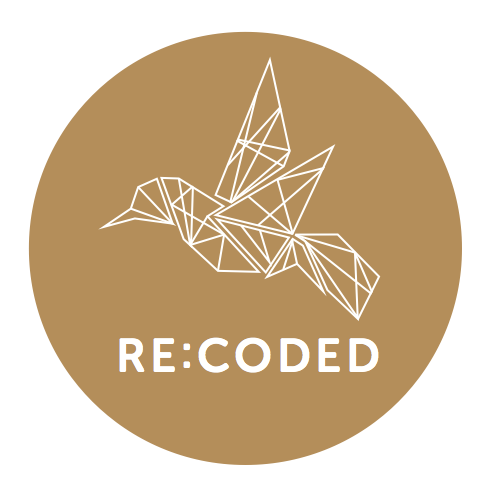

Rails Girls comes to Istanbul! During the free two-day workshop we'll dive into the magical world of Ruby on Rails.
You learn designing, prototyping and coding with the help from our coaches.
You need your own laptop, curiosity and a sprinkle of imagination!
Want to help? We are looking for volunteers and Rails coaches. Email us.
| 14:00 - 14:30 |
RegistrationGet to know your mentor and and fellow attendees |
|---|---|
| 14:30 - 14:45 |
WelcomeOpening word from organisers |
| 14:45 - 15:00 |
Intro to RubyTalk by Uğur Özyılmazel |
| 15:00 - 18:00 |
Let's get readyWith a help from your mentor, install all that you need to begin your journey in Ruby on Rails coding (please remember to bring your laptop). Next, do some Ruby coding exercises, to prepare for building your very first web app next day! |
| 10:30 - 10:45 |
WelcomeOutline of the day |
|---|---|
| 10:45 - 13:00 |
WorkshopTime for Ruby. And Rails. And maybe some HTML & CSS? Work on your Rails application. |
| 13:00 - 13:40 |
Lunch |
| 13:40 - 14:00 |
How to build your branding and digital marketing strategy?Lightning talk by Göksemin Gökalp Özdemir |
| 14:00 - 14:30 |
Bentobox exerciseUnderstanding web apps - recap of what we’ve learned and how it all fits together.By Ender Ahmet Yurt |
| 14:30 - 16:45 |
WorkshopLet's get creative! Expand and improve your Ruby on Rails application |
| 16:45 - 17:00 |
Goodbye! |
Applications closed on Nov 11th
Location: Workup, Kolektif House
Esentepe Mah. Talatpaşa Cad. No: 5
(Harman Sok. Girişi) Şişli / İstanbul
Contact us: our
email &
facebook page
Rails Girls Istanbul is organized by Rails Girls and Re:Coded, with a help of our awesome partners.
Re:Coded is a not-for-profit organization preparing conflict-affected youth to enter the digital economy as software developers and tech leaders. Since 2017, Re:Coded has trained more than 450 children and young adults how to code in Iraq, Turkey and Yemen. Re:Coded was founded on the belief that learning how to code should be available to everyone, specially women and men affected by conflict. As war-shattered economies start to get back on their feet, Re:Coded trains the generation that will drive these countries forward with the help of technology.
 YeniHayat is an İstanbul based technology company with expertise of Linux based embedded applications.
Bringing together the power of open-source technologies and agile methods we build state of art software products.
YeniHayat is an İstanbul based technology company with expertise of Linux based embedded applications.
Bringing together the power of open-source technologies and agile methods we build state of art software products.
 Lab2023 was established In 2009 at Pamukkale Technopark as a team of marketers, designers and developers
to transform customers’ business ideas into the real products.
Lab2023 was established In 2009 at Pamukkale Technopark as a team of marketers, designers and developers
to transform customers’ business ideas into the real products.
We are a team who designing and developing web/mobile applications; We draw ideas as sketches, transform drawings to prototypes, develop applications from prototypes and we deliver the working product to our customers. After delivering, we’ll measures product performance and usability for sustainability.
 Serap Ekici
Serap Ekici Ender Ahmet Yurt
Marcello Bonatto
Alexandra Clare
Arkadiusz Kita
Alexander Sumiński
Joanna Wójtowicz
Tayfun Öziş Erikan
Barbara Hoffmann
Małgorzata Nowak
Marek Ciupak
Fadime Özhan
Julia Jacobs
Eyüp Atiş
Okan Binli
Murat Baştaş
Eşref Viduşlu
Muhammed Dilmaç
Anıl İyidoğan
Oğulcan Girginç
Akif Kumlu
Büşra Çelik
Ecem Çisem Tunca
Yeliz Koç Erikan
Ender Ahmet Yurt
Marcello Bonatto
Alexandra Clare
Arkadiusz Kita
Alexander Sumiński
Joanna Wójtowicz
Tayfun Öziş Erikan
Barbara Hoffmann
Małgorzata Nowak
Marek Ciupak
Fadime Özhan
Julia Jacobs
Eyüp Atiş
Okan Binli
Murat Baştaş
Eşref Viduşlu
Muhammed Dilmaç
Anıl İyidoğan
Oğulcan Girginç
Akif Kumlu
Büşra Çelik
Ecem Çisem Tunca
Yeliz Koç Erikan